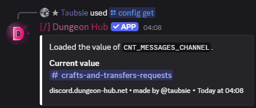
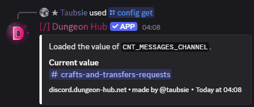

/config get
Arguments
Name | Type | Description | Optional? |
|---|---|---|---|
| String (autocompleted) | Property to display. | ❌ No |
Examples
/config get property: CNT_MESSAGES_CHANNEL

27 December 2025
Name | Type | Description | Optional? |
|---|---|---|---|
| String (autocompleted) | Property to display. | ❌ No |
